Verkefni 2 - Parametrísk hönnun og tölvustuddur skurður
Vínylskurður
Hluti af verkefni 2 var að vínylskera eitthvað út, þ.e.a.s. gera límmiða. Ég ákvað að gera límmiða af uppáhalds hljómsveitinni minni og setja hann á tölvuna mína. Fyrsta sem ég gerði var að ná í Inkscape og finna góða mynd af því sem ég vildi búa til. Síðan afritaði ég myndina inn í Inkscape og gerði Trace Bitmap til að búa til vigra mynd. Síðan gerði ég Stroke to Path svo í fill and stroke stillingarnar og valdi no fill, flat color og 0.02mm í breidd í stroke style til að fá útlínurnar. Þegar það var allt komið þá var næsta skref að skera út límmiðan með vínylskeranum, til þess þarf að vista skjalið úr Inkscape sem svg. Hér má sjá hvernig þetta kom út:
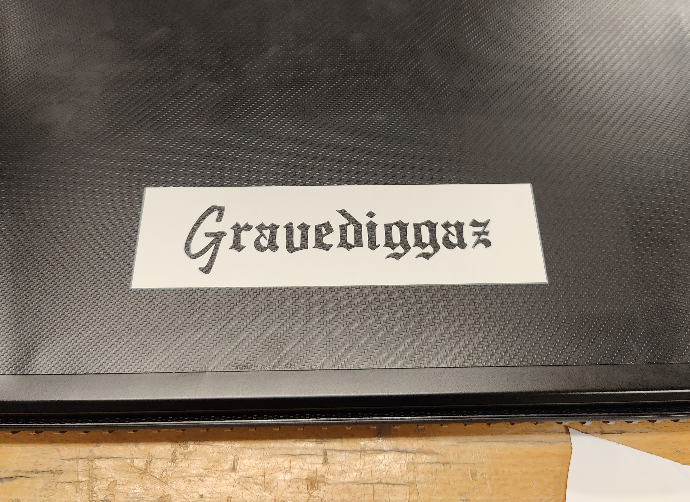Til að nálgast Viðeigandi skrám smelltu á límmiða hnappinn:
Límmiði
KERF-prófun
Hluti af geislaskurðar verkefninu var að gera KERF prófun, þ.e. mæli þykkt geislans. Þar sem ég ætlaði að notast við tvö efni þá þurfti ég að gera tvær KERf prófan, þ.e.a.s. eitt fyri svartan 3mm akríl og eitt fyrir glæran 2mm akríl. Sama teikning var notuð fyrir báðar prófaninar en hér má sjá teikninguna:
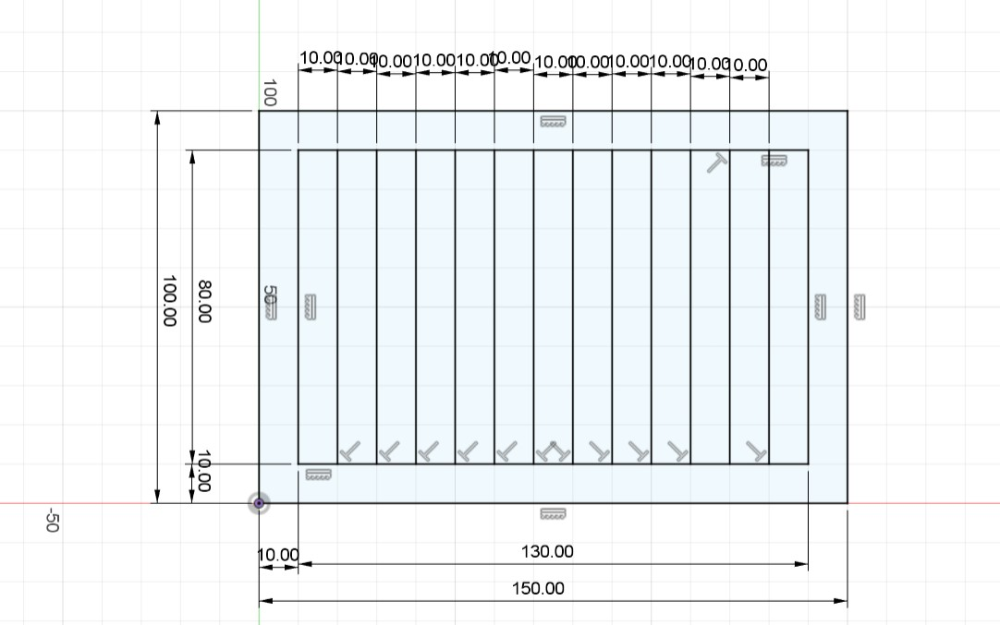Síðan var þessi teikning vistuð sem dxf skrá og færð fyrir í Inkscape og sett línu breidd 0.02mm. Vert er að nefna að það er hægt að minnka teikninguna í Inkscape til að spara efni, sem var gert. Fyrir 3mm akrílinn þá var ég í samstarfi með Guðmundi, en hér má sjá niðurstöður mælinga og myndir:
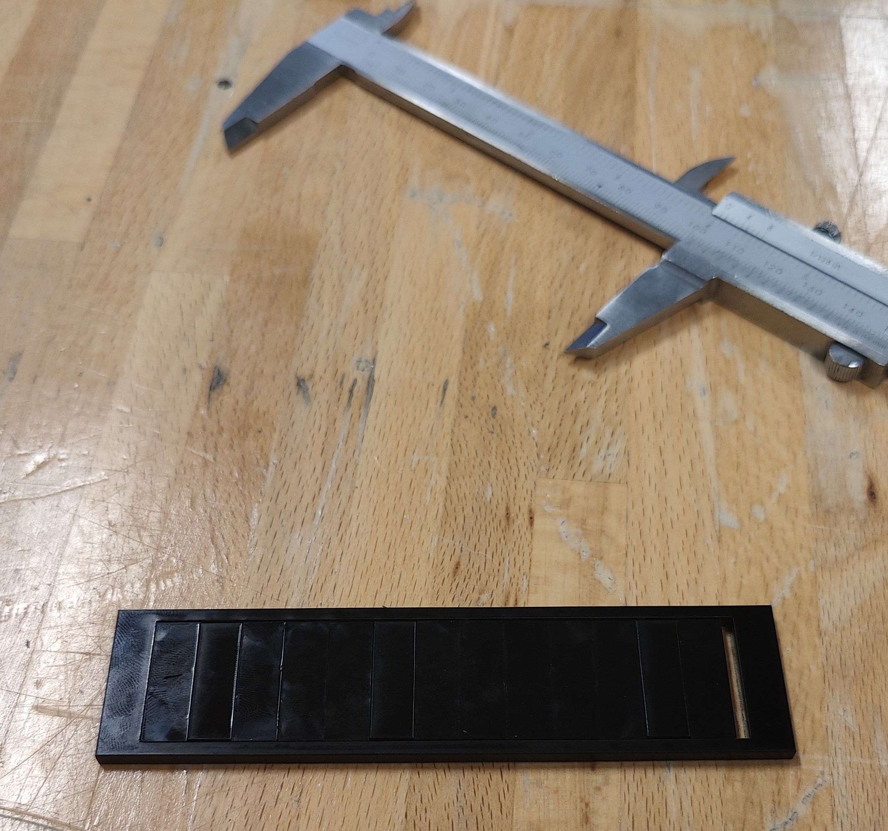 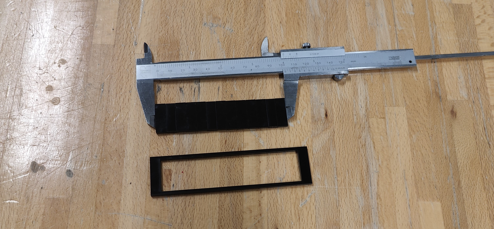Það var mælt að lengdin inn í rammanum var L_rammi = 104,1mm og heildar lengdin þegar kubbanir voru hliðin á hvor öðrum var L_kubbar = 101,65mm. Síðan til að finna KERF-ið þarf að finna mismuninn og deila með fjölda skurðar lína eða 14. Það fékkst að KERF-ið fyrir svarta 3mm akrílinn var 0.175mm.
Næsta skref var að finna KERF-ið fyrir glæra 2mm akrílinn en það var notað sömu aðferð og fyrir svarta 3mm akrílinn. Ég gerði þessa KERF prófun einn þar sem enginn annar var að notast við glæran 2mm akríl, en hér má sjá niðurstöður mælinga og myndir:
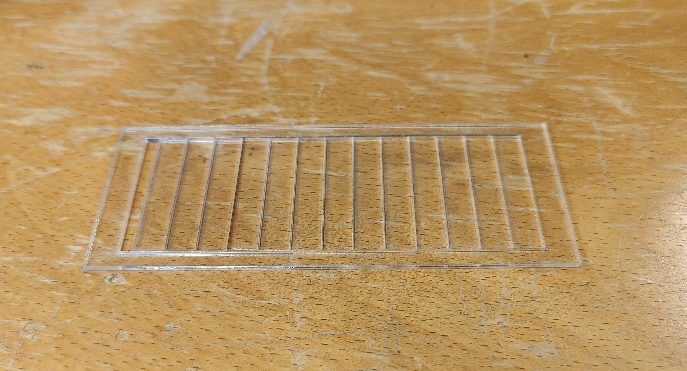Það var mælt að lengdin inn í rammanum var L_rammi = 108,5mm og heildar lengdin þegar kubbanir voru hliðin á hvor öðrum var L_kubbar = 104,6mm. Síðan til að finna KERF-ið þarf að finna mismuninn og deila með fjölda skurðar lína eða 14. Það fékkst að KERF-ið fyrir svarta 3mm akrílinn var 0.279mm.
Parametrískt gernelgt módel
Ég vill segja fyrst og fremst að ég er ekki að fara gefa upp lausnina á púslinu hér, ef einhver vill sjá hvort þetta virkar þá þarf sá aðili að reyna við púslið.
Þar sem verkefnið snérust um það að hanna hlut sem ætti að smell passa saman, þá fannst mér það mjög góð hugmynd að gera óvenjulegt púsl sem væri ekki eins og klassísku púslin. Einnig fannst mér það passleg hugmynd þar sem verkefnið reynir á þau vandamál sem eiga sér stað þegar það er verið að geislaskera hluti, t.d. að finna KERF-ið og hvernig KERF-ið hefur áhrif á hvernig púslin myndu passa saman. Einnig hannaði ég og gerði tvíhliða bakka svo hægt væri að púsla saman púslið báðu megin á bakkanum. Öll hönnun og undirbúningur fyrir geislaskurð var gerður í Fusion, einnig var lagað skurðarferilinn í Inkscape.
Fyrsta skrefið var að hanna bakkan. Það var ekki erfitt að hanna bakkan en parametranir urðu frekar flóknir í endann, þar sem bakkinn þarf að hýsa púslið. Þ.e.a.s. þar sem púslið þurfti að vera parametrískt þá þarf að finna útfrá púslinu hvað bakkinn þarf að vera stór. Við hönnun á púslinu dróg ég innblástur frá öðru púsli sem heitir WAVE 7 PUZZLE. Þegar ég var að hanna púslið þá vildi ég festa eina breytu fyrir stærð púslsins og ég ákvað að festa breiddina á einum púsl bita, og útfrá því væri hægt að leiða út hvað bakkinn á að vera stór.
 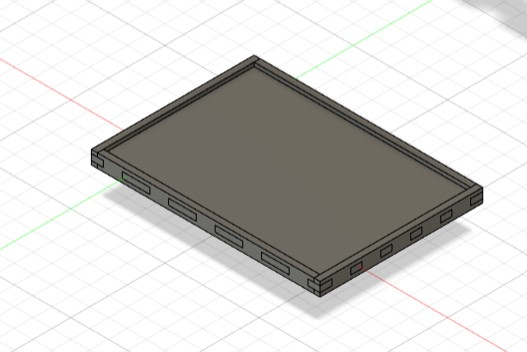
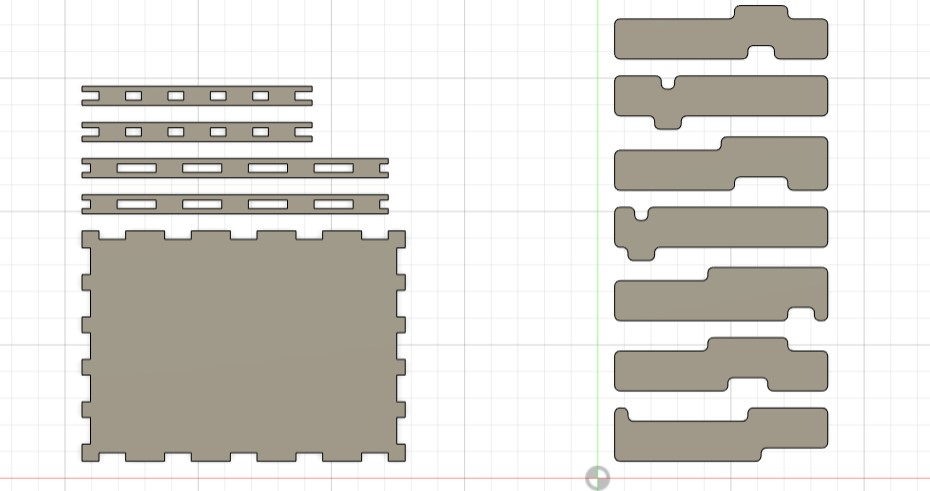
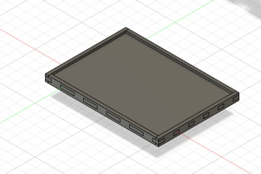
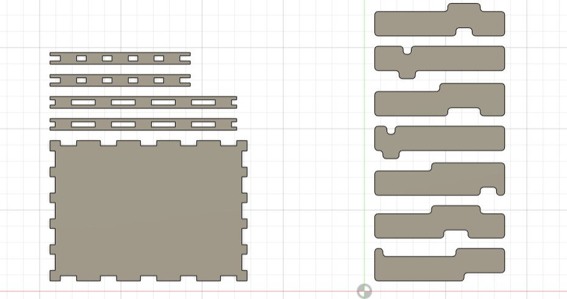
Næsta skref eftir að hönnun var komin var að prófa hvort gernlegta festingin sem ég hannaði myndi virka. Ég endaði örugglega í 6 prufum fyrir svarta 3mm akrýlinn þar sem þykktin á honum var svo breytileg. En eftir að fikta með KERF-ið og þykktinni í Fusion þá fékk ég loks prufu sem ég var ánægður og þá var næst að skera út bakkan. Þrátt fyrir prufuna sem heppnaðist mjög vel þá var ég ekki svo heppinn með bakkan en akrýlinn sprakk smá meðan ég var að setja þetta saman en hann heldur og er fastur. Fyrir glæra 2mm akrýlinn þá var þykktinn á honum ekki svona breytileg og með svarta akrýlinn, heldur var hann 2mm eins og hann átti að vera. Ég gerði ekki í rauninni prufu fyrir púsl bitana heldur skar ég út tvo bita sem ég vissi ættu að passa saman og við fyrstu tilraun þá smell pössuðu þeir svo ég skar restina af púsl bitunum út.
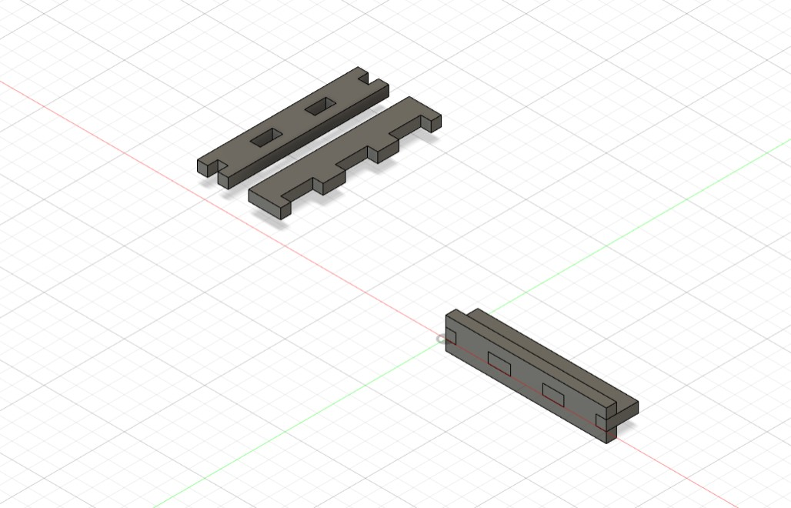 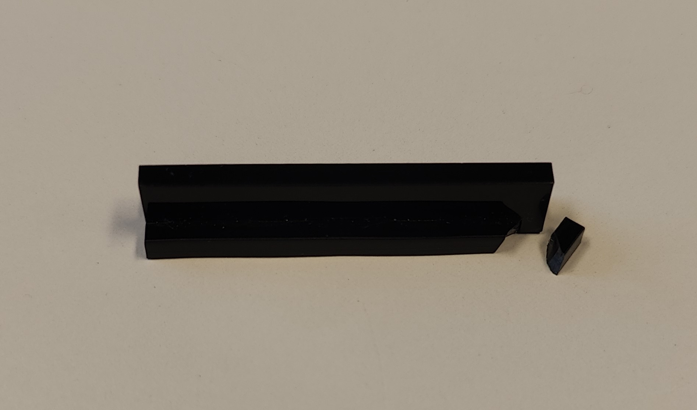Skjöl
Púsl og Bakki
KERF Próf
Einnig er hægt að nálgast skjölin inn á Thingiverse